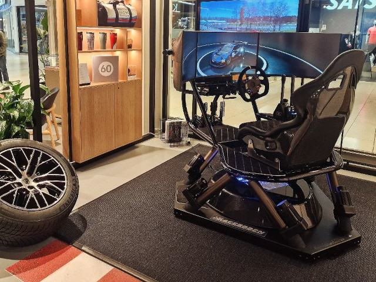

Racingsimulator till event
Att hyra en racingsimulator till ett event är ett perfekt sätt att skapa en engagerande och minnesvärd aktivitet för dina kunder, kollegor eller samarbetspartners.
Vår racingsimulator Racemore 600s har en avancerad teknik som ger en realistisk körkänsla och har racingstol, ratt och pedaler av hög standard. Det finns ett stort utbud av bilar och banor att välja emellan. Upplev känslan av att köra legendariska sportbilar som Ferrari, Lamborghini, Porsche och andra exklusiva modeller. En tekniker finns på plats för att sätta upp, guida och hantera simulatorn under hela eventet. Det enda du behöver göra är att luta dig tillbaka och låta dina gäster njuta av en autentisk racingupplevelse.
Vill du hyra in racingsimulatorn till ditt afterwork, fest, att stå i din monter på en mässa eller till öppet hus på ditt företag?
Kontakta Raceboden idag för att diskutera dina behov och få en skräddarsydd lösning för ditt nästa event.
